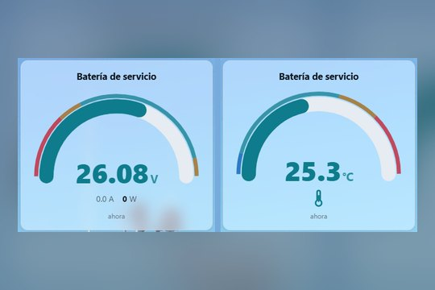
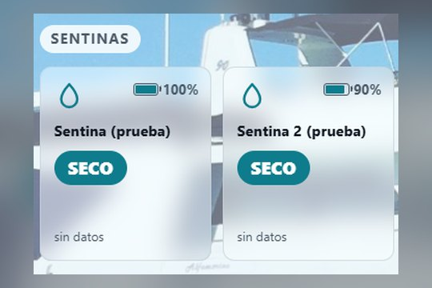
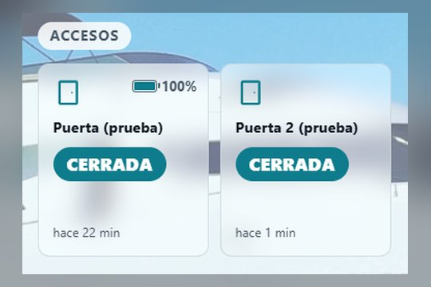
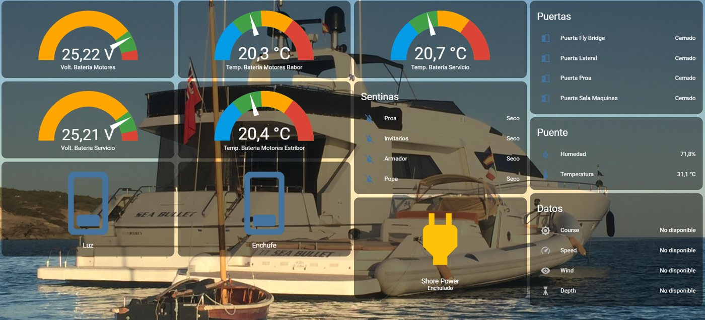
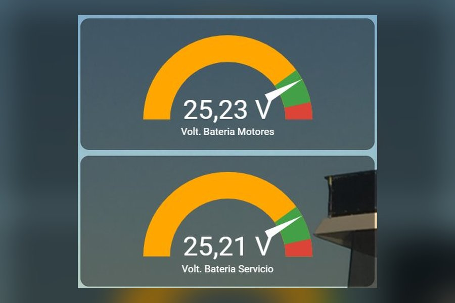
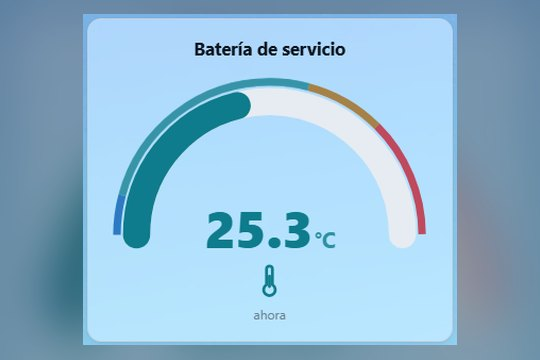
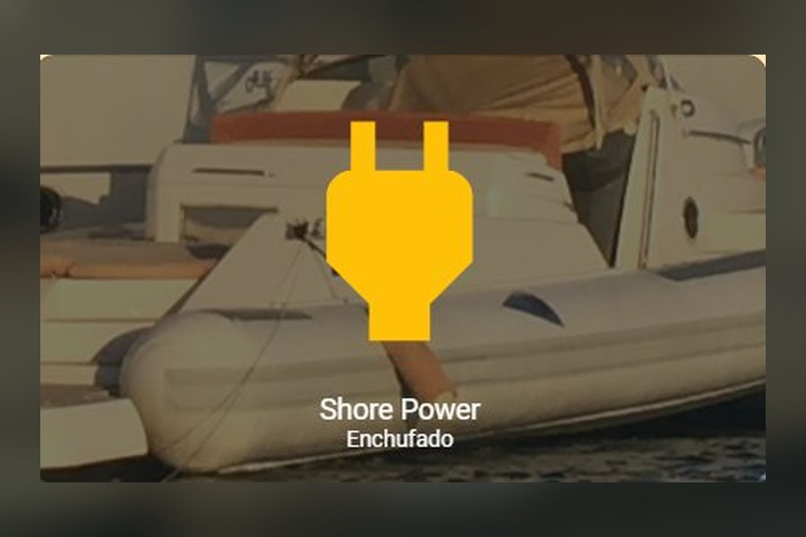

V·°CBaterías
Voltaje y temperatura de motor y servicio.
Baterías, sentinas y accesos vigilados 24/7. Si algo cambia, te llega un aviso al móvil.
Pruébalo:

V·°CVoltaje y temperatura de motor y servicio.

H₂OAviso al primer rastro de agua.

⊡Puertas y escotillas, con hora de apertura.
Incluye núcleo, router 4G/5G, instalación y avisos en el móvil.
Sensores inalámbricos: sin obras ni cables por todo el barco.
Desliza para ver todo →




Tú disfrutas del barco. Boat Core lo vigila el resto del tiempo.
Vemos tu barco y qué conviene vigilar.
Sin obras, según normas náuticas.
Avisos en tu móvil, estés donde estés.
Precio cerrado tras la visita, según tu barco.
No. El kit lleva su propio router 4G/5G con datos incluidos en la cuota.
Sigue funcionando con las baterías del barco (menos de 10 W) y te avisa del corte.
Sí, en veleros y barcos a motor de 12 V o 24 V.
Quien tú quieras: tú, tu capitán o tu empresa de mantenimiento.
Presupuesto sin compromiso en toda Mallorca.